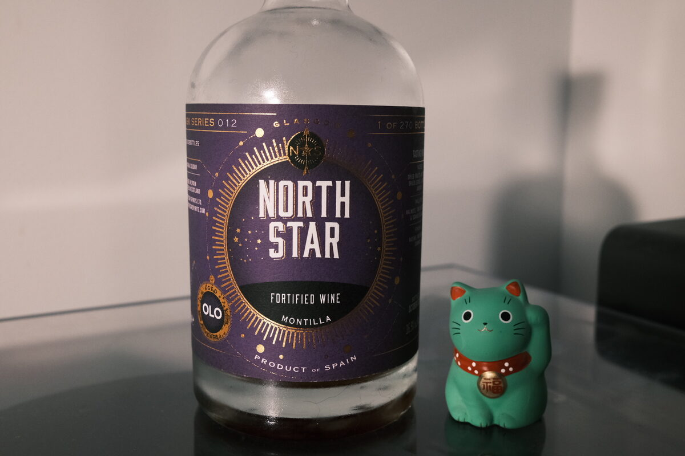

Montilla Oloroso NV North Star 16.9% (Scotch cask)
Ever wonder what happens to the sherry used to season your cask? Usually it’s poured down a drain, but North Star bottled this one. Although it’s not technically sherry because it was made in Montilla. Anyway: from what I gather, used to season a barrel that once held whisky. So think of it as Scotch finished oloroso, not oloroso finished Scotch.
Colour Dark ruby, golden brown.
Nose Fresh with a hint of minerality. Walnuts and almonds. Grapes. Hints of Fennel. Rum and raisin chocolate. A little boozy, estery at warmer temperatures.
Palate Quite sweet, for an oloroso! Brown sugar. Full bodied, dried fruits – sultanas and raisins. A hint of fresh acidity and grassiness.
Finish Creamy, raisins and figs coated in milk chocolate. A touch of oak. long, becoming sweeter.
Comments I reckon it’s sweeter than most olorosos, but I’ve friends that say it’s dry as the desert sands. Don’t get me wrong – it’s still a dry wine. But it is decadent. Not the best oloroso on the planet, but very interesting stuff for whisky geeks.

Posted by Dominic on 06 May 2021